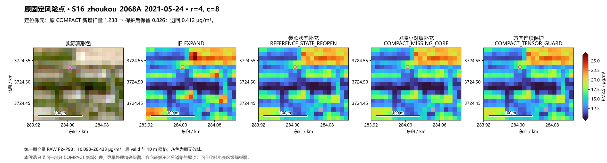
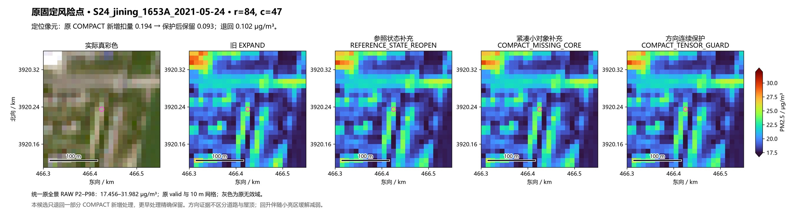
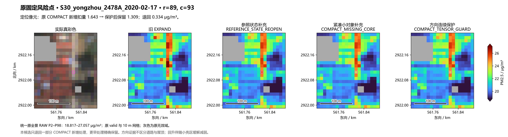
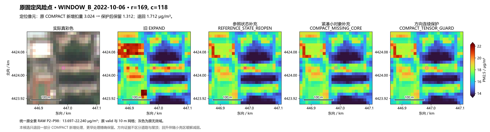
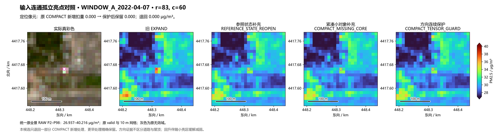
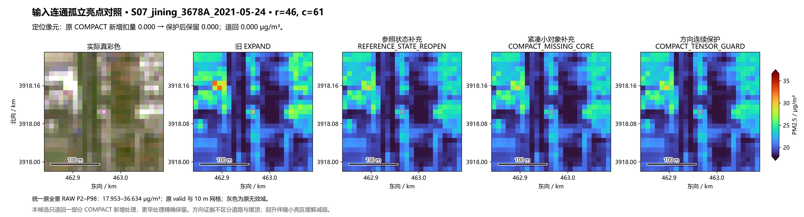
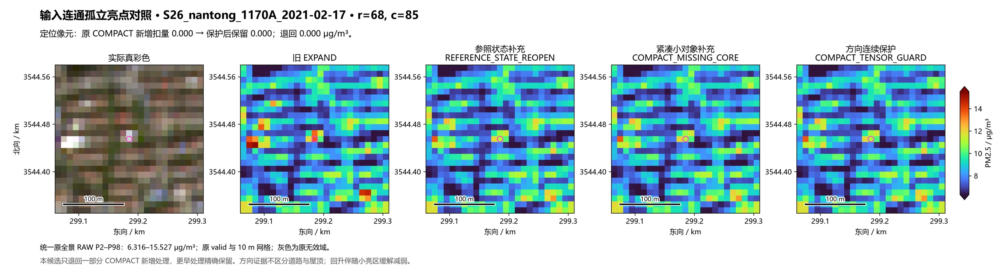

方向连续保护：退回部分新增扣量的权衡试验
唯一候选在 206 场完成，0 拟合。采用已经锁定的四带结构张量与有效梯度占比，只减弱 COMPACT 的新增可见光扣量，更早处理、NIR 和原有效范围精确保留。
全 4171 个原变化格中，退回 38.12% 新增扣量，仍保留 61.88%。这会减轻部分浅条上的额外压低，也会让一部分小亮屋顶重新升高。原 30 对象平均新增降幅由 0.909 降为 0.491 μg/m³。
原 231 地图相交格退回 37.19% 扣量；建筑代理组退回 38.17%。二者很接近，不能据此宣称已把道路和屋顶分开。固定道路 ROI 最大均值变化 0.0070 μg/m³，工业 ROI 核心最大变化 0.00048，邻域最大变化 0.01278。窗口/日期统计变化极小，未证明真实像元精度改善。
七处位置和色限预先固定。三个对照本来没有 COMPACT 新增扣量，因此本候选严格不动；这种不变不能证明方向特征区分了屋顶。三个对照仅为输入阈值的连通孤立亮点；其中济宁 S07 实际位于浅色条带/交叉附近，未将它替换成更有利的例子。
固定风险点 · S16_zhoukou_2068A_2021-05-24
定位像元新增扣量：1.238 → 0.826 μg/m³；退回 0.412。


固定风险点 · S24_jining_1653A_2021-05-24
定位像元新增扣量：0.194 → 0.093 μg/m³；退回 0.102。


固定风险点 · S30_yongzhou_2478A_2020-02-17
定位像元新增扣量：1.643 → 1.309 μg/m³；退回 0.334。


固定风险点 · WINDOW_B_2022-10-06
定位像元新增扣量：3.024 → 1.312 μg/m³；退回 1.712。


输入连通孤立亮点对照 · WINDOW_A_2022-04-07
定位像元新增扣量：0.000 → 0.000 μg/m³；退回 0.000。


输入连通孤立亮点对照 · S07_jining_3678A_2021-05-24
定位像元新增扣量：0.000 → 0.000 μg/m³；退回 0.000。


输入连通孤立亮点对照 · S26_nantong_1170A_2021-02-17
定位像元新增扣量：0.000 → 0.000 μg/m³；退回 0.000。


结果简述 · 完整数值总结 · 原 30 对象 · 原 156 全部对象 · 新增 50 全部对象 · 道路/工业 · 25 对实测事件 · 唯一候选口径